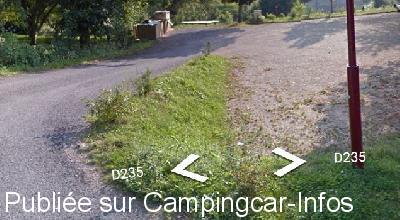

APN = Parking toléré jour/nuit de :
SAINT MAURICE EN QUERCY
(N° 238)
Accès/adresse :
Place de l’Église
46120 SAINT MAURICE EN QUERCY
46120 SAINT MAURICE EN QUERCY
Latitude : (Nord) 44.74279° Décimaux ou 44° 44′ 34′′
Longitude : (Est) 1.9474° Décimaux ou 1° 56′ 50′′
Tarif : Gratuit
Services :

Autres informations :
10 emplacements
Tel : +33(0)565 409 005

Le 07/02/2016 par Parking
Aucun commentaire pour le moment